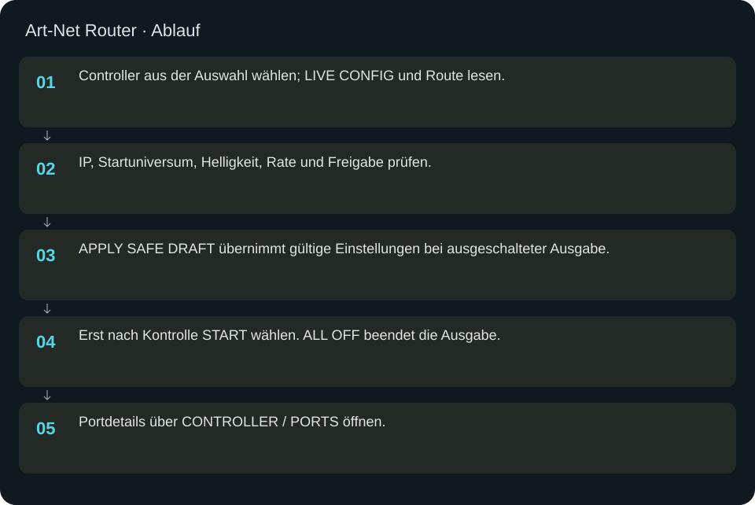

Art-Net Router
Controller auswählen, Routen und Status prüfen, Änderungen sicher anwenden und Ausgabe bewusst starten.
In welcher Reihenfolge?
- Controller aus der Auswahl wählen; LIVE CONFIG und Route lesen.
- IP, Startuniversum, Helligkeit, Rate und Freigabe prüfen.
- APPLY SAFE DRAFT übernimmt gültige Einstellungen bei ausgeschalteter Ausgabe.
- Erst nach Kontrolle START wählen. ALL OFF beendet die Ausgabe.
- Portdetails über CONTROLLER / PORTS öffnen.


Schritt für Schritt
Beispiel ohne Lichtausgabe
PANEL8_251 auswählen, 299 Plätze und zwei benötigte Universen am passenden Port kontrollieren. Helligkeit 0.02 und Freigabe 0 sind ein sicherer Entwurf. SAFE APPLY prüfen, anschließend Status erneut lesen. Kein START für einen reinen Konfigurationstest.
Status richtig verstehen
Configured, enabled, running, disabled-only und unassigned sind verschiedene Zustände. Zugeordnete Quellplätze sind nicht automatisch sichtbare Messpunkte. Ausdrücklich schwarze Lücken bleiben erhalten. LIVE BRIGHTNESS wirkt auf den laufenden Sender; es übernimmt keine anderen Entwurfsfelder.
Konflikte
Wenn eine andere Ansicht die Konfiguration geändert hat, zuerst RELOAD verwenden und den Entwurf erneut prüfen. Der Router blockiert veraltete Ausgangsdaten. Neue Controller und Portkapazitäten werden in Controller/Ports angelegt.
Eingaben & Beispiele
| Feld | Bedeutung | Beispiel |
|---|---|---|
router_target_ip | IPv4-Ziel des ausgewählten Controllers. | 10.0.0.251 |
router_start_universe | Art-Net-Paketadresse ab 0, nicht eine um eins erhöhte Anzeige. | 156 |
router_brightness | Helligkeitsfaktor 0–1. 0.02 entspricht 2 Prozent. | 0.02 |
router_enabled | 0 = deaktiviert; 1 = freigegeben. SAFE APPLY startet den Sender nicht. | 0 |
router_rate | Angeforderte Rate 1–120 FPS; tatsächlichen Durchsatz separat prüfen. | 30 |
cal_panel | Kalibrierziel aus der angebotenen Auswahl. | all |
cal_pattern | Kalibriermuster: panel_id, rows, columns oder chase. | panel_id |
cal_chase | Index für das gezielte Kalibriermuster, ab 0. | 0 |
extra_brightness | Helligkeit eines zusätzlichen Controllers, 0–1. | 0.02 |
ws_ip | IPv4-Ziel des Controllers; veraltete Karten sind ausgeblendet. | 10.0.0.244 |
ws_universe | Startuniversum des Controllers. Aktuelle dynamische Karte verwenden. | 0 |
ws_brightness | Helligkeitsfaktor 0–1. | 0.02 |
ws_enabled | Freigabe 0/1; startet allein keine Ausgabe. | 0 |
apa_ip | IPv4-Ziel des Controllers; veraltete Karten sind ausgeblendet. | 10.0.0.244 |
apa_universe | Startuniversum des Controllers. Aktuelle dynamische Karte verwenden. | 0 |
apa_brightness | Helligkeitsfaktor 0–1. | 0.02 |
apa_enabled | Freigabe 0/1; startet allein keine Ausgabe. | 0 |
Numerische Eingaben verwenden einen Punkt als Dezimaltrennzeichen. IPs, Pfade, Quellstarts und Universen zuerst mit der tatsächlichen Installation vergleichen.
Woran erkenne ich Erfolg?
Die erwartete Ansicht öffnet, Status und Vorschau entsprechen der gewählten Aktion, und es erscheint kein Fehler. Änderungen beim nächsten Laden beziehungsweise im Live-Status erneut lesen. Ein erfolgreicher Bildschirmtest beweist weder physische LED-Ausgabe noch korrekte Kameramessung.
Quellennachweis
Dateipfade im Projekt-Repository; die Onlinehilfe gibt keinen allgemeinen Dateisystemzugriff frei.
pixelblaze_mapper/router_dynamic_ui.pypixelblaze_mapper/build_multi_controller_output.py
Dialog: /project1/multi_controller_output/ui_panel